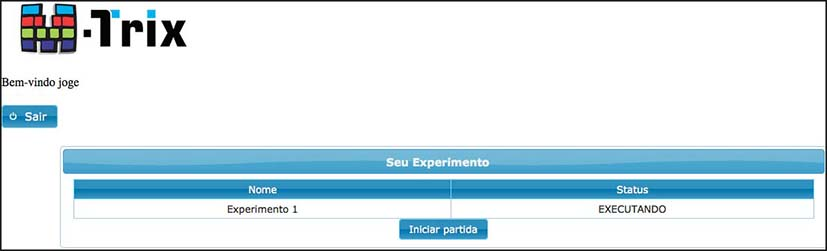

Neste manual são apresentadas as principais funcionalidades contidas na versão atual do M-Trix.
O M-Trix foi desenvolvido focando principalmente nas funcionalidades relacionadas aos participantes do estudo, que devem interagir com uma matriz de tamanho e cores fixas definidos originalmente pelos pesquisadores do Laboratório de Comportamento Social e Seleção Cultural – LABCULTURA/UFPA.
Menu Condições
Este menu contém os itens Cadastrar Condição, Cadastrar Pontuação Individual e Cadastrar Pontuação Cultural.
Imagem 1 - Menu Condições
Cadastrar Pontuação Individual
Para cadastrar uma nova Pontuação Individual é necessário que se escolha a Cor da Linha, Conector(E/OU) e Pontuação(+ ou -) conforme ilustrado na Imagem 2.
A Pontuação individual é critério para o cadastro de Condições, logo, deve ser cadastrada antes da Condição.
Imagem 2- Cadastrar Pontuação Individual
Cadastrar Pontuação Cultural
Para cadastrar uma nova Pontuação Cultural é necessário que se escolha a Cor da Linha, Conector(E/OU) e Pontuação(+ ou -) conforme ilustrado na Imagem 3.
A Pontuação Cultural também é critério para o cadastro de Condições, logo, também deve ser cadastrada antes da Condição.
Imagem 3 - Cadastrar Pontuação Cultural
Pontuação Variável
A Pontuação Variável está presente tanto para a configuração da Pontuação Individual quanto para Cultural, onde, pode-se estipular uma forma dessas pontuações ocorrerem de forma aleatória, como é ilustrado na imagem 4.
No item Quantidade de Ciclos, deve-se informar a cada quantos ciclos essa pontuação variável entrará em vigor.
Só é possível escolher entre pontuação Fixo e Variável, onde:
- Pontuação Fixo: A pontuação será exata
- Pontuação Variável: A pontuação será um valor entre os numeros informados.
Ex.: Como ilustra a imagem 4, a cada 6 ciclos, a Pontuação Cultural será um valor entre 2 e 5.
Imagem 4 - Pontuação Variável
Cadastrar Condição
A configuração de um experimento é realizada por um conjunto de condições onde, para cadastrar uma Condição, é necessário primeiramente cadastrar a Pontuação Individual e Cultural(visto no tópico anterior), após isso, deve-se escolher um Nome para a condição e fazer uma pequena Descrição do Objetivo da mesma., os campos Nome e Objetivo são obrigatórios.(Imagem 5 ).
A partir dái, com as Pontuações Individual e Cultural já cadastradas, deve-se escolher, na lista que será exibida, quais pontuações iram valer para a condição que está sendo cadastrada. Deve-se também preencher os campos que são Critérios de parada da Condição, são eles:
- Máximo de Ciclos: Quantidade máxima de ciclos em que a condição será válida.
- Ultimos X Ciclos: Quantidade de ciclos que servirão como base para os calculos das porcentagens Individual e Cultural.
- Mínimo de Ciclos: Quantidade mínima de ciclos em que a condição será válida, mesmo que atenda outros critérios de parada.
- Porcentagem de acerto Individual: Critério de parada que leva em consideração os acertos Individuais
- Porcentagem de acerto Cultural: Critério de parada que leva em consideração os acertos Cultural
*Todos os campos do item Critérios de Parada, aceitam APENAS valores numéricos.
É importante ressaltar que, a Condição só irá parar, mesmo que atenda outros critérios de parada, após atingir o numero mínimo de ciclos. Ex.: O Percentual de Acerto Individual é de 60%, e o Mínimo de Ciclos é 7, então, mesmo que o participante alcance esse percentual logo nos 5 primeiros ciclos, a condição só ira parar no 7º ciclo.
Imagem 5 - Cadastrar Condição
Imagem 6 - Cadastar Condição
Menu Experimento
Este menu contém os itens Cadastrar Experimento, Cadastrar Jogador e Verificar Jogadores (Imagem 7)
Imagem 7 - Menu Experimento
Cadastrar Experimento
A configuração do Experimento, dentre outras coisas, é um conjunto de Condições, conforme a Imagem , para cadastrar um novo experimento deve-se informar Nome, Objetivo, Pontuação Inicial Cultural e Individual e escolher uma Condição(já cadastrada anteriormente).
O Pesquisador deve escolher se quer ou não que as Pontuações Individuais e/ou da Ultima Jogada sejam visualizadas pelos Jogadores. No ultimo passo de configuração do experimeto, o pesquisador deve escolher, na lista que é exibida, quais jogadores ele gostaria que participassem do experimento que está criando.(Imagem 8 e 9)
Fica a critério do pesquisador também habilitar ou não o CHAT para o experimento que está cadastrando.

Imagem 8 - Cadastrar Experimento
Incluir 9 - Cadastrar Experimento
Cadastrar Jogador
Para Cadastrar um Jogador, deve-se informar obrigatoriamente o Nome, Login e Senha. O Login é unico, logo, não poderá ser repetido para outro participante. Os demais campos de cadastro são opcionais (Imagem 10 ).
Após informar os dados e clicar no botão Salvar, uma mensagem de confirmação será exibida, conforme na imagem . Caso o Login escolhido já esteja sendo usado por outro jogador, uma mensagem informativa será exibida.
O Participante receberá um login e senha que lhe permitem acesso ao experimento, porém, mesmo que o login exista, é necessário alocar o participante à algum experimento e executar o experimento para que o participante tenha acesso ao mesmo, caso contrário, o participante receberá um aviso indicando para procurar os pesquisadores responsáveis.
Imagem 10 - Cadastrar Jogador
Verificar Jogadores
Lista todos os jogadores cadastrados e informa o status de cada um deles.
Imagem 11 - Lista de Jogadores Cadastrados
Iiciar Experimento
Após realizar o login com sucesso e possuir um estudo agendado corretamente, o participante é conduzido à tela principal do sistema onde pode interagir com diferentes ferramentas.
Obs.: Caso o experimento para o qual você está alocado não esteja ativo no momento, você receberá uma mensagem informativa. Para maiores informações procure o pesquisador responsável.

Imagem 12 - Iniciar Experimento
Matriz
Qualquer informação presente na parte superior, direito ou inferior da exibição da Matriz pode ser configurada pelos pesquisadores para serem exibidas ou não.
A Matriz destaca a área de resultados do experimento. Estes resultados representam as principais informações que vão ser utilizadas pelos participantes para tomada de decisão de suas escolhas durante o experimento. Todas as informações podem ser atualizadas dinamicamente a cada rodada, dependendo é claro das escolhas e pontuações dos participantes, tais como ganhar pontuação individual, peder perder pontuação de grupo, etc.
A Matriz é composta por dez linhas enumeradas de 1 a 10 e dez colunas ordenadas de A a J. O botão OK só é habilitado quando todos os jogadores lotados para o experimento estiverem logados, só a partir dái é possível começar o experimento.
Imagem 13 - Matriz Experimento
Login
Para efetuar login deve ser informado o Usuário e a Senha. Tem-se dois perfis diferentes, o de Pesquisador e o de Jogador, onde, o usuário com perfil de Jogador apenas participará do experimento(Matriz), e o perfil de Pesquisador terá acesso total a todas as funcionalidades do M-Trix.